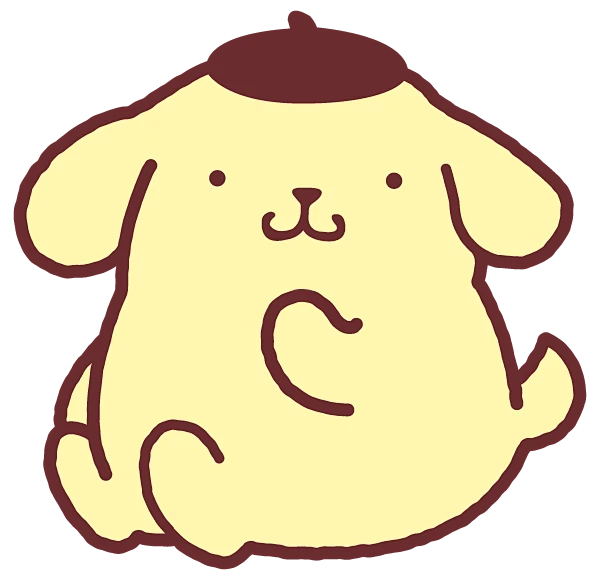
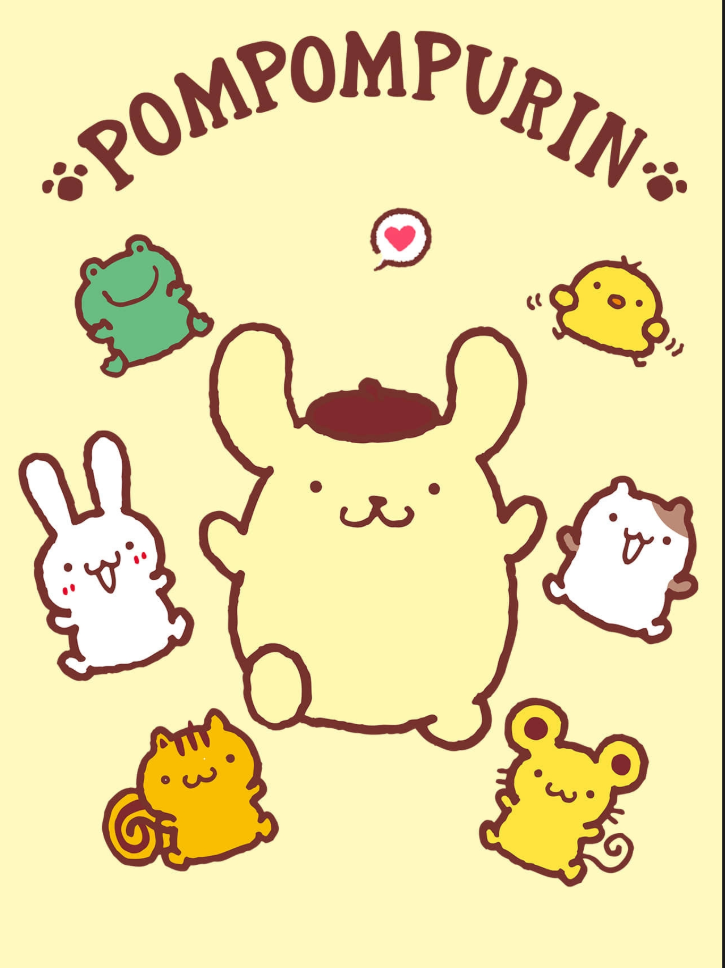

玛芬 仓鼠
布丁狗最要好的朋友，贪吃，喜欢把坚果塞满脸颊。

布丁狗小档案约 5 个布丁叠起来的高度
约 1 个西瓜的重量
再长大一些
悠闲、乐观、有点呆萌，做事按自己的节奏，和谁都能很快成为朋友。
说睡就睡，雷打不动
软乎乎的招牌体操
和谁都能玩到一起

布丁狗身边有许多以甜点命名的朋友——仓鼠、小狗、小熊、小鸟、青蛙……大家常常聚在一起，分享美食和午后的阳光。上图插画里，小青蛙、小鸡、小兔、小猫、小松鼠和小老鼠都围在他身边。
布丁狗最要好的朋友，贪吃，喜欢把坚果塞满脸颊。
爱打扮，头上常戴蝴蝶结，和布丁狗关系亲近。
温柔，喜欢晒太阳。
喜欢冰淇淋和夏天。
精力旺盛，喜欢收集果实。
活泼，喜欢奶油甜点。
喜欢大海和夏天。
喜欢美食派对。
害羞，有酒窝。
活泼，话多。
跳跃高手，性格开朗。
来自南方，喜欢水果。
会杂耍，调皮。
来自冰原，外冷内热。
布丁狗的日文名就是「プリン」（布丁），所以中文习惯叫他「布丁狗」——名字本身就像一份甜点。
官方设定里，他的身高是「5 个布丁叠起来」，体重是「1 个西瓜的重量」——身材也很有布丁的自觉。
布丁狗的爸爸和妈妈生日都是 8 月 8 日。爸爸的职业是侦探，喜欢双关语冷笑话，常戴眼镜和高顶礼帽。
首次获得三丽鸥角色人气大赏冠军
以 807,389 票再次获得第 31 届冠军